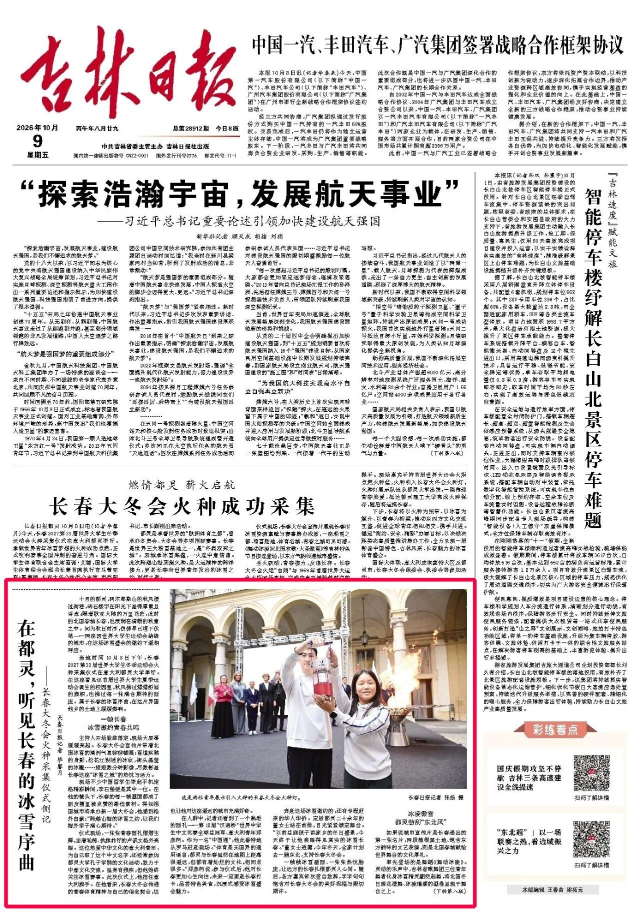
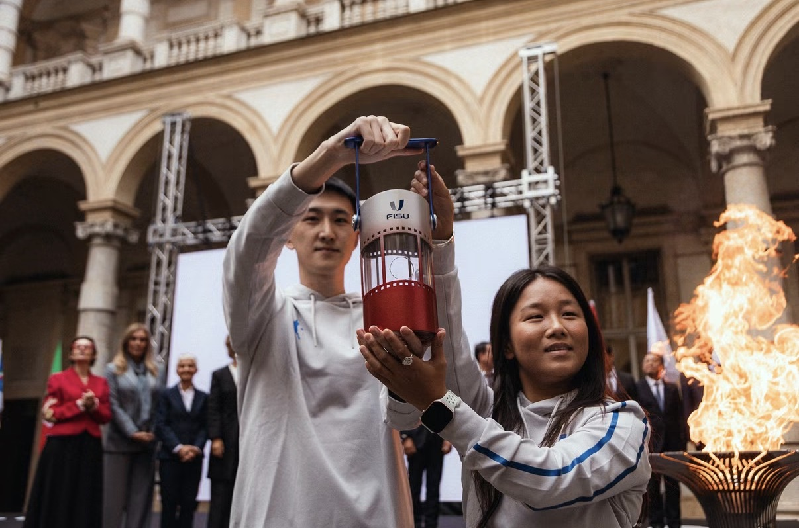
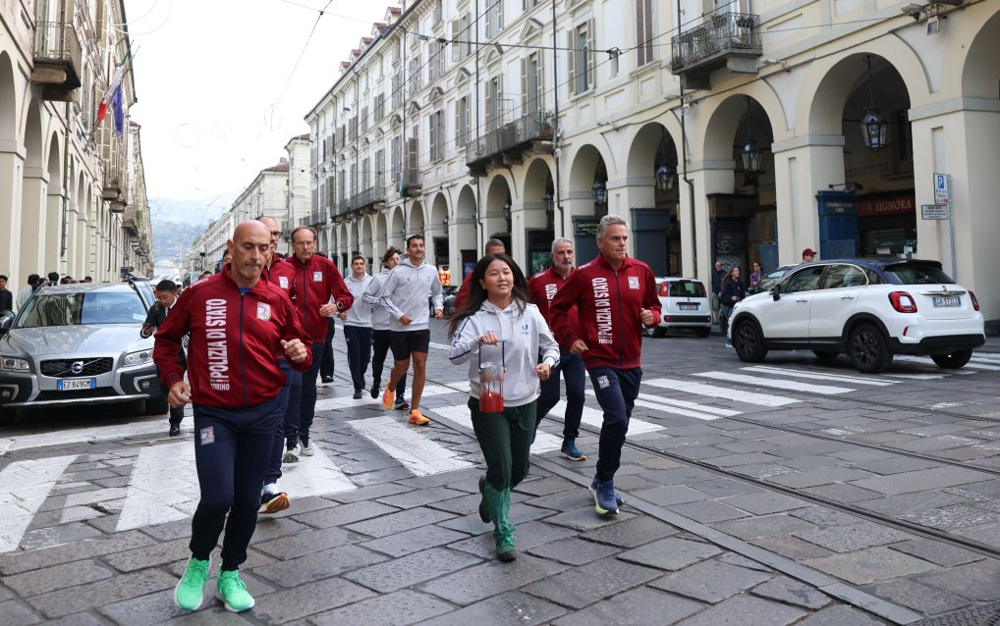
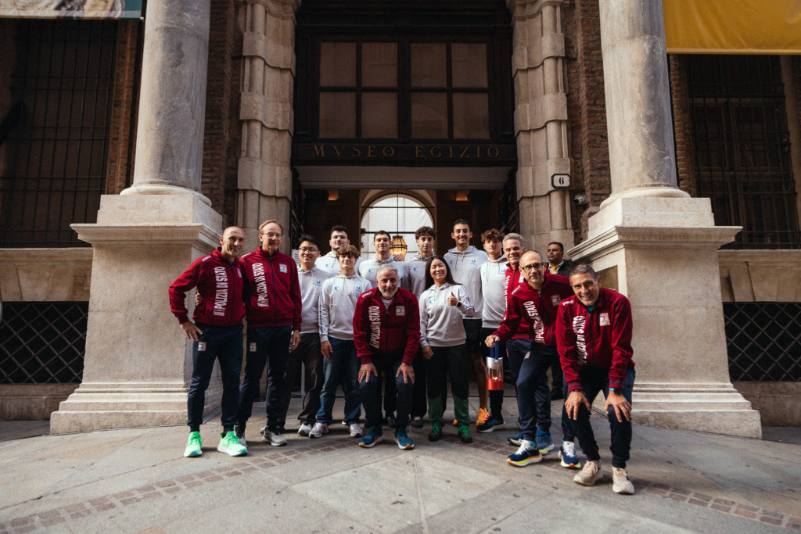
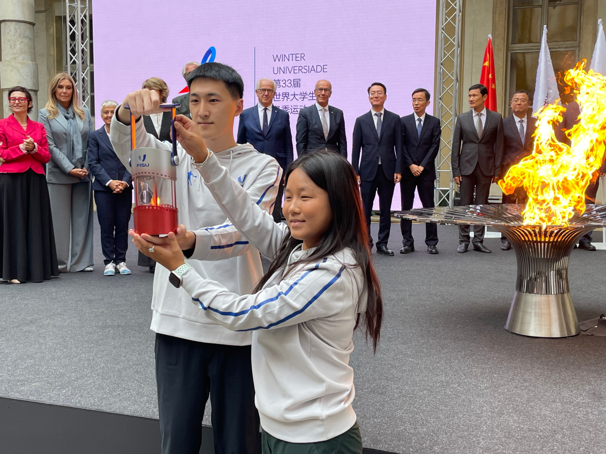
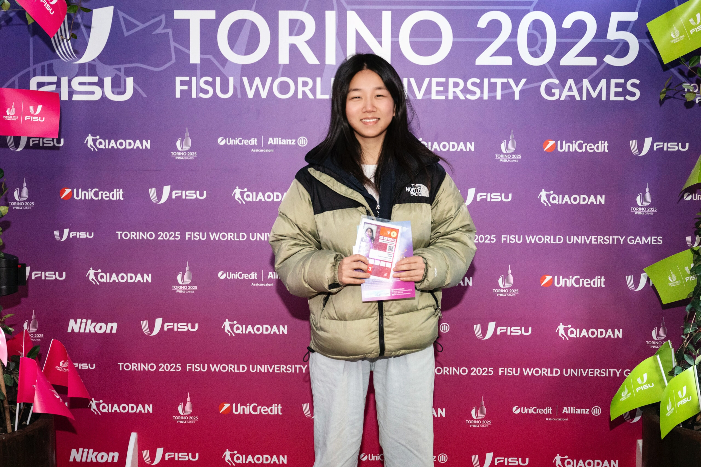
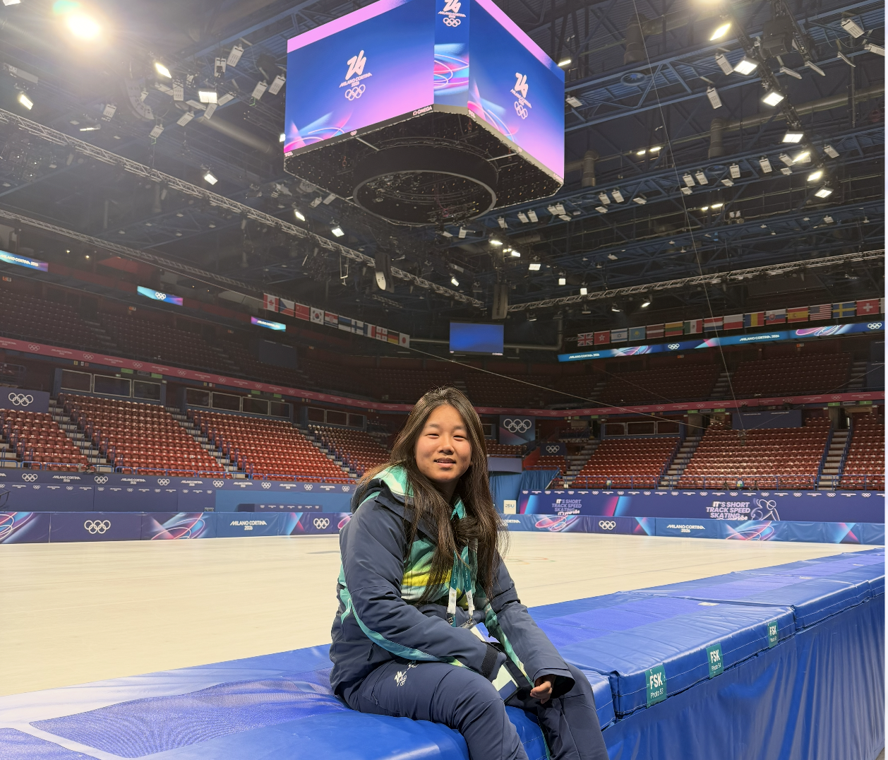

Press & Media Highlights
From a FISU Torino 2025 volunteer to the very first torchbearer at the Flame Lighting Ceremony for the FISU World University Games in Turin. Carrying the sacred flame from Italy to China, bridging youth, sports, and cultural exchange.

Background & Story
On October 8, 2026, history was made in Turin, Italy. I had the profound honor of serving as the 1st Torchbearer at the official Flame Lighting Ceremony for the FISU World University Games. Passing the torch from Europe to Asia represents a symbolic continuation of my own personal journey—from studying and competing in China to living, volunteering, and working in Italy.
My involvement with FISU began as a dedicated volunteer for the Torino 2025 Winter World University Games. This role evolved into receiving the ultimate trust from the FISU Committee and CUS Torino to ignite the flame for the Changchun 2027 FISU Winter Games. This milestones was covered across international and national broadcasting platforms including CCTV-5, CCTV-13, and Phoenix TV.
Official Press Release
Read the full coverage on the FISU Official Portal
Explore official event highlights, ceremony photos, and news updates from the International University Sports Federation.
Featured TV Interviews & Coverage
Ceremony & Experience Gallery

The sacred moment of igniting the torch at the Flame Lighting Ceremony in Turin, Italy.
The torch relay began under the escort of Turin police.
With members of the Turin polices and CUS Torino representatives in front of Turin Egyptian Museum.
Receiving the Winter Universiade flame in the presence of the FISU committee.
A commemorative photo taken at the volunteer ceremony for the 2025 Turin Winter Universiade.
Photo of short track speed skating volunteer for the Milan 2026 Winter Olympics